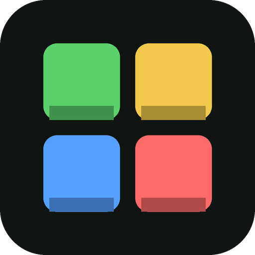

PIXEL POTES
Un seul programme pour rejoindre le serveur : il installe tout, garde les mods à jour et te connecte directement à la survie. Tu n'as rien à régler.
Installation en 3 étapes
Télécharge et installe
Clique sur Télécharger, puis ouvre PixelPotes-Setup.exe. Si ton navigateur demande, choisis Conserver.
Passe l'avertissement Windows
Windows affiche « Windows a protégé votre ordinateur » : clique sur Informations complémentaires puis Exécuter quand même. C'est normal pour un programme fait maison.
Connecte ton compte
Clique sur JOUER. La première fois, une fenêtre s'ouvre : Comptes → Ajouter Microsoft. Ferme-la, reclique sur JOUER : tu arrives sur le serveur.
Questions
Il me faut Minecraft ? Oui, un compte Minecraft Java Edition acheté (le même compte Microsoft que d'habitude).
Le premier lancement est long ? Quelques minutes : le launcher télécharge Java, le jeu et les mods. Ensuite, c'est rapide.
Et les mises à jour ? Automatiques : à chaque JOUER, les mods se mettent à jour tout seuls.